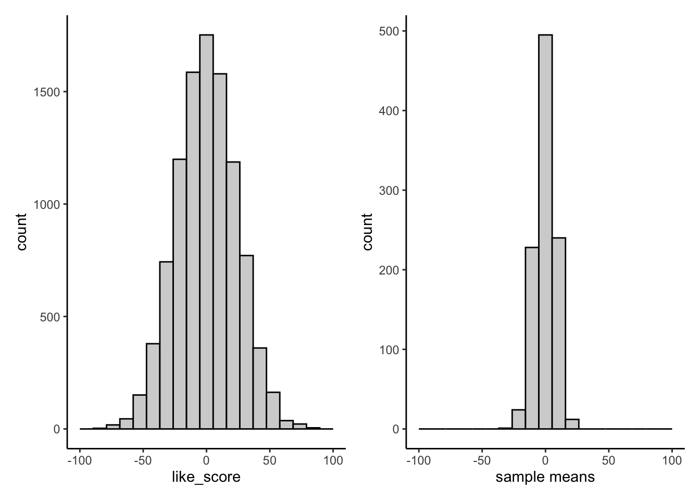
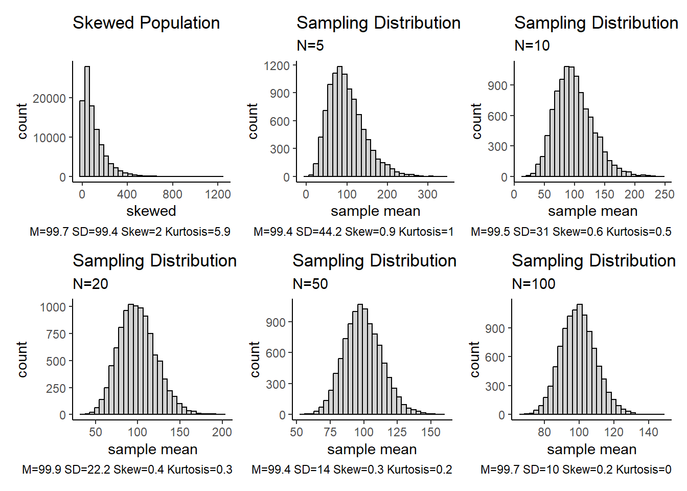
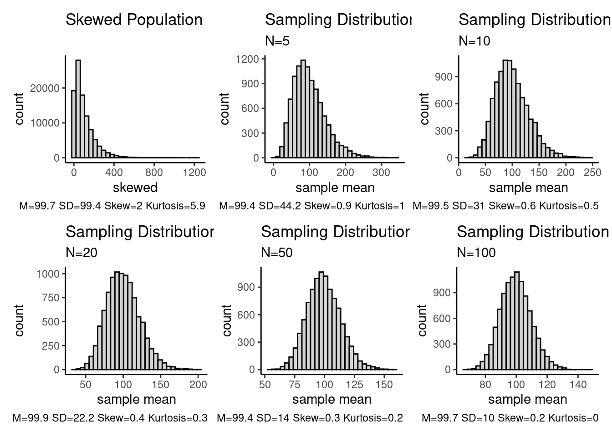
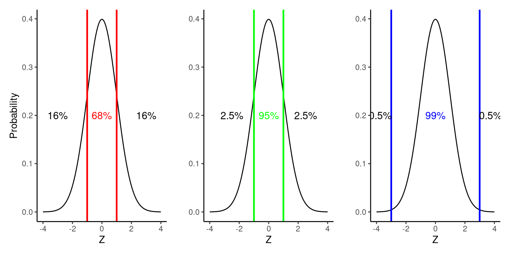
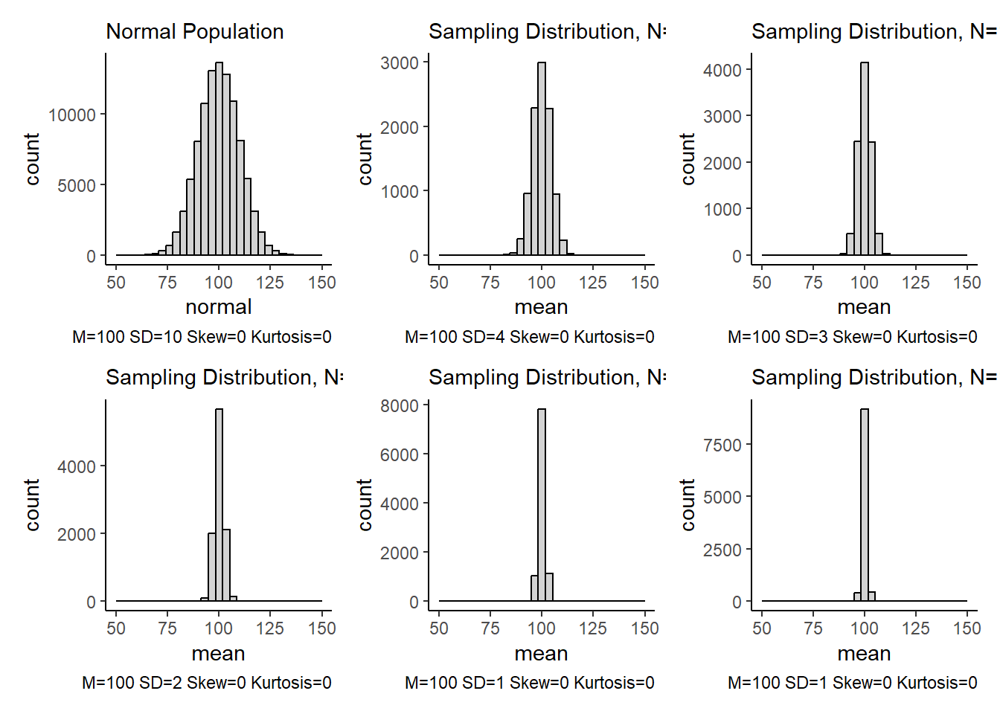
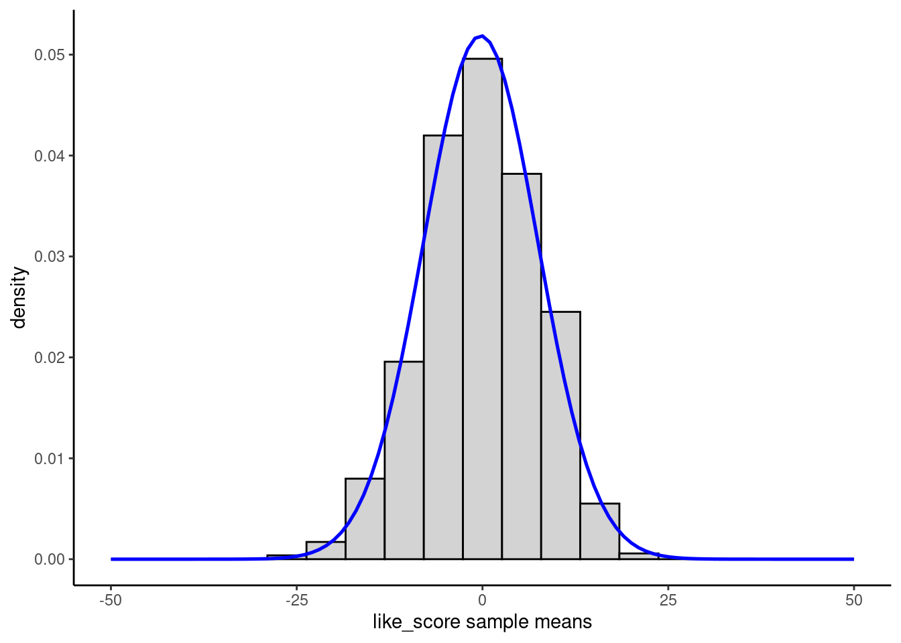
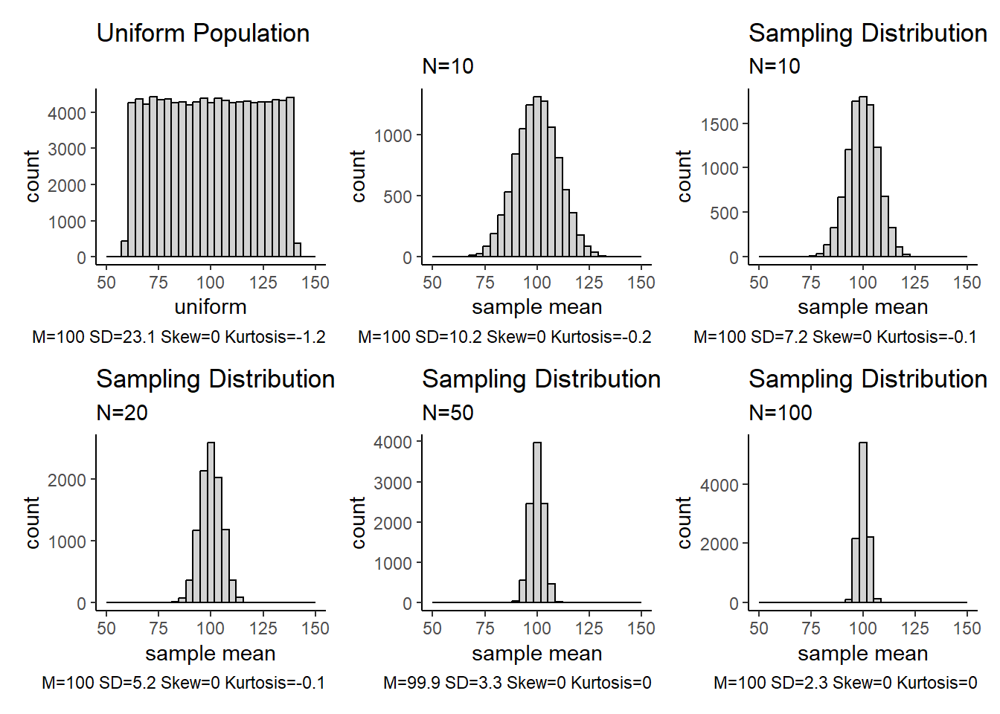
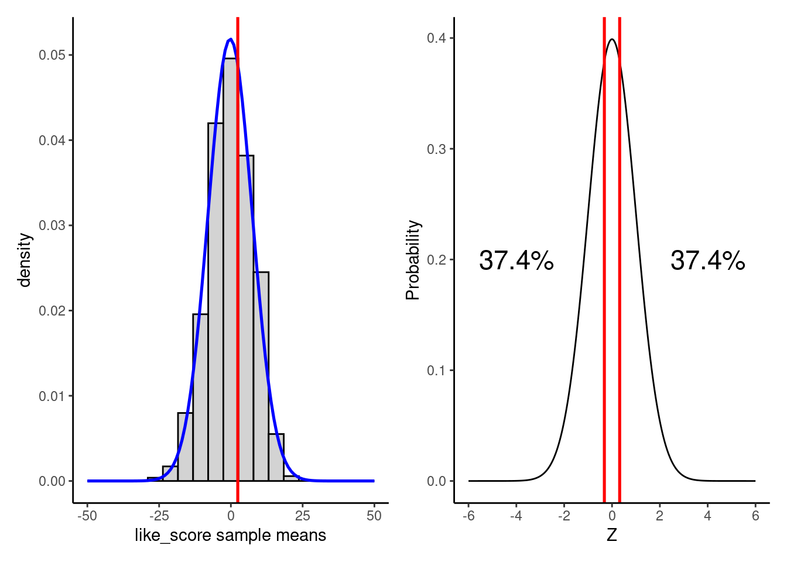
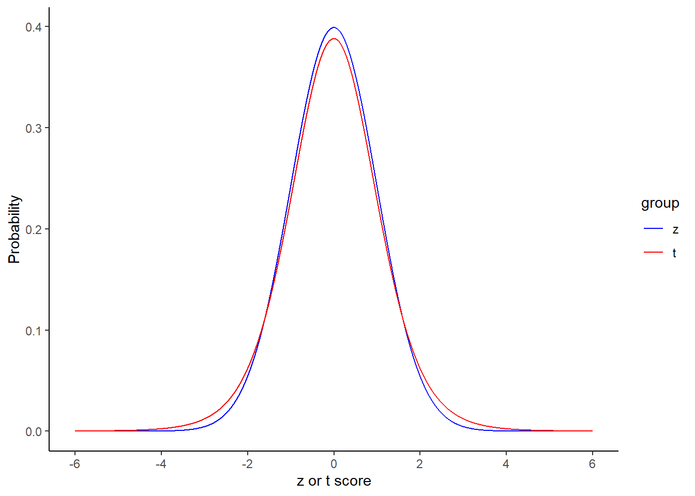

Inferential statistics are used to estimate parameters in the population from parameter estimates in a sample drawn from that population.
We use these parameter estimates to test hypotheses (predictions; null and alternative hypotheses) about the size of the population parameter.
These hypotheses about the size of population parameters typically map directly onto research questions about relationships between variables (IVs/predictors and DVs/outcomes).
Our conclusions about our hypotheses are probabilistic. In other words, all conclusions have the potential to be wrong and you will provide an index of that probability along with your results.
Populations
A population is any clearly defined set of objects or events (people, occurrences, animals, etc.)
Populations usually represent all events in a particular class (e.g., all college students, all alcoholics, all depressed people, all people)
It is often an abstract concept because in many/most instances you will never have access to the entire population
Many of our studies may have the population of all people as its implicit target
Researchers usually want to describe or draw conclusions about populations
We don’t care if some new drug is an effective treatment for 100 people in your sample
Instead, we want to know if it will, on average, for everyone we might treat
(Population) Parameters
A parameter is a value used to describe a certain characteristic of a population
For example, the population mean is a parameter that is often used to indicate the average/typical value of a variable in the population
The value for a population parameter is a fixed and does not vary within the population at the time of measurement (e.g., the mean height of people in the US at the present moment).
The value for a population parameter is usually unknown and can’t be calculated directly because we dont have access to the entire population.
We use Greek letters to represent population parameters (\(\mu\), \(\sigma\), \(\sigma^2\), \(\beta_0\), \(\beta_j\)).
Samples & Parameter Estimates
A sample is a finite group of units (e.g., participants) selected from the population of interest.
A sample is generally selected for a study because the population is too large to study in its entirety
We typically have only one sample in a study
Samples can be selected randomly or not (e.g., convenience samples) from the population, which has implications for the conclusions we reach but not necessarily for the analyses.
We use the sample to estimate and test parameters in the population
These estimates are called parameter estimates.
We use Roman letters to represent sample parameter estimates (\(\overline{X}\), \(s\), \(s^2\), \(b_0\), \(b_j\)).
Sampling Error
Since a sample does not include all members of the population, the value for any parameter estimate from any specific sample generally differs from the associated parameter from the entire population
For example, the mean height of a sample of 1000 people drawn randomly from the US population will not exactly match the mean height of US population
This difference between the (sample) parameter estimate and the (population) parameter is called sampling error
You will not be able to calculate the sampling error of your parameter estimate directly because you don’t know the value of the population parameter. However, you can estimate it by probabilistic modeling of the hypothetical sampling distibution for that parameter.
Hypothetical Sampling Distribution
A sampling distribution is a probability distribution for a parameter estimate drawn from all possible samples of size \(N\) taken from that population.
A sampling distribution can be formed for any population parameter.
Each time you draw a sample of size \(N\) from a population you can calculate an estimate of that population parameter from that sample.
Because of sampling error, these parameter estimates will not exactly equal the population parameter. They will not equal each other either. They will form a distribution.
A sampling distribution is an abstract concept that represents the outcome of repeated (infinite) sampling. You will typically only have one sample.
What if we didn’t need samples?
Research question: How do inhabitants of a remote pacific island feel about the ocean? Population size = 10,000.
Dependent measure: Ocean liking scale scores that range from -100 (strongly dislike) to 100 (strongly like). 0 represents neutral.
Hypotheses:\(H_0: \mu = 0; H_a: \mu \neq 0\)
Question: How would you answer this question if you had unlimited resources (e.g., time, money, and patience)?
Question: How would you answer this question if you had unlimited resources (e.g., time, money, and patience)?
Administer the Ocean liking scale to all 10,000 inhabitants in the population and calculate the population mean score. Is it 0? If not, the inhabitants are not neutral on average.
This line of code will tell will tell us when we load two packages with conflicting functions (i.e., they have the same name) by producing an error. There are ways to set custom conflict policies and work around conflicts (e.g., only loading certain functions from a package). You can find more documentation here.
2
This path points to where your data is and should be a relative path from your R project.
3
We use the here() function in the here package (here::here()) to define paths within a function. This approach (vs. file.path()) works well when using R Projects in quarto notebooks.
glimpse()
can be used to display useful information, like number of rows and column, variable (column) names, a sample of what the data look like, and the class of each variable (e.g., double, character, factor).
can used by itself (see below) or directly in a pipeline when reading in the the data (e.g., could have been add to the pipline above on a line following read_csv())
We can view the distribution of raw scores using a histogram
Code
plot_raw <- data |>ggplot(aes(x = like_score)) +geom_histogram(color ="black", fill ="light grey", bins =20) +scale_x_continuous(limits =c(-100, 100)) +1theme_classic()
1
We can use themes to customize the output of our figures. This can be piped into your ggplot() code or set globally at the top of your script (see next slide)
Code
theme_set(theme_classic()) plot_raw
Parameter Estimation and Testing
Question: What do you conclude?
Question: What do you conclude?
Inhabitants of the island are neutral on average on the Ocean Liking Scale; \(\mu\) = 0.
Question: How confident are you about this conclusion?
Question: How confident are you about this conclusion?
Excluding issues of measurement of the scale (i.e., reliability), you are 100% confident that the population mean score on this scale is 0 because you calculated the mean using all the scores in the population(\(\mu\) = 0).
Question: Of course, this approach to answering a research question is not typical. Why? And how would you normally answer this question?
Question: Of course, this approach to answering a research question is not typical. Why? And how would you normally answer this question?
You will very rarely have access to all scores in the population. Instead, you have to use inferential statistics to “infer” (estimate) the size of the population parameter using a parameter estimate calculated from a sample of that population.
Obtain a Sample
You are a poor graduate student. All you can afford is \(N = 10\).
Code
set.seed(2005) data |>slice_sample(n =10) |>summarise(n =n(),mean =mean(like_score),sd =sd(like_score))
# A tibble: 1 × 3
n mean sd
<int> <dbl> <dbl>
1 10 2.14 19.4
Question: What do you conclude and why?
Question: What do you conclude and why?
A sample mean of 2.14 is not 0. However, you know that the sample mean will not match the population mean exactly. How likely is it to get a sample mean of 2.14 if the population mean is 0 (think about it!)?
Your friend is a poor graduate student too. All she can afford is \(N = 10\) too.
Code
data |>slice_sample(n =10) |>summarise(n =n(),mean =mean(like_score),sd =sd(like_score))
# A tibble: 1 × 3
n mean sd
<int> <dbl> <dbl>
1 10 1.74 23.0
Question: What does she conclude and why?
Question: What does she conclude and why?
A sample mean of 1.74 is not 0. However, she knows that the sample mean will not match the population mean exactly. It is more likely to get a sample mean of 1.74 than 2.14 if the population mean is 0 but she still doesn’t know how likely either outcome is. What if she obtained a sample with mean of 30?
Sampling Distribution of the Mean
You can construct a sampling distribution for any parameter estimate (e.g., mean, \(s\), min, max, \(r\), \(b_0\), \(b_1\)).
For the mean, you can think of the sampling distribution conceptually as follows:
Imagine drawing many samples (lets say 1000 samples but in theory, the sampling distribution is infinite) of \(N\)=10 participants (10 participants in each sample) from your population.
Next, calculate the mean for each of these samples of 10 participants.
Finally, create a histogram (or density plot) of these sample means.
Note: In your research, you don’t form a sampling distribution by repeated sampling. You (typically) only have one sample
Here we are writing a function that we will use to generate descriptive statistics over 1000 samples. We are keeping this function generic because we are going to use this function again later in the chapter for more simulation examples!
Question: What will the mean of the sample means be? In other words, what is the mean of the sampling distribution?
Question: What will the mean of the sample means be? In other words, what is the mean of the sampling distribution?
The mean of the sample means (i.e., the mean of the sampling distribution) will equal the population mean of raw scores on the dependent measure. This is important because it indicates that the sample mean is an unbiased estimator of the population mean.
Code
plot_samples

The mean is an unbiased estimator
The mean of the sample means will equal the mean of the population.
Therefore, individual sample means will neither systematically under or overestimate the population mean.
Raw Ocean Liking Scores
Code
data |>summarise(n =n(), mean_m =round(mean(like_score), 2), sd =sd(like_score))
# A tibble: 1 × 3
n mean_m sd
<int> <dbl> <dbl>
1 10000 0 23.7
# A tibble: 1 × 3
n mean_m sd
<int> <dbl> <dbl>
1 1000 -0.24 7.69
The sample variance (\(s^2\); with n-1 denominator) is also an unbiased estimator of the population variance (\(\sigma^2\)).
In other words, the mean of the sample \(s^2\)’s will approximate the population variance
Sample \(s\) is negatively biased
Question: Will all of the sample means be the same?
Question: Will all of the sample means be the same?
No, there was a distribution of means that varied from each other. The mean of the sampling distribution was the population mean but the standard deviation was not zero.
# A tibble: 1 × 3
n mean_m sd
<int> <dbl> <dbl>
1 1000 -0.24 7.69
Code
plot_samples
Standard Error
The standard deviation of the sampling distribution of the mean (i.e., standard deviation of the infinite sample means) is equal to:
\(\frac{\sigma}{\sqrt{N_{sample}}}\)
Where \(\sigma\) is the standard deviation of the population raw scores.
This variability in the sampling distribution is due to sampling error
Because we use parameter estimates calculated in our sample to estimate population parameters, we would like to minimize sampling error
The standard deviation of the sampling distribution for a parameter estimate has a technical name. It is called the standard error of the parameter estimate. Here, we are talking about the standard error of the mean.
Question: What factors affect the size of the standard error of the mean(i.e., its sampling error)?
Question: What factors affect the size of the standard error of the mean(i.e., its sampling error)?
The standard deviation of the population raw scores and the sample size.
Question: Variation among raw scores for a variable in the population is broadly caused by two factors. What are they?
Question: Variation among raw scores for a variable in the population is broadly caused by two factors. What are they?
1. Individual differences. 2. Measurement error (the opposite of reliability)
Question: What is the relationship between population variability in the raw scores (\(\sigma\)) and the standard error of the mean?
Question: What is the relationship between population variability in the raw scores (\(\sigma\)) and the standard error of the mean?
As the variability (e.g., its standard deviation) of the raw scores on the variable increases in the population, the standard error of the mean increases.
Question: What would happen to standard error of the mean if there was no variation in population scores?
Question: What would happen to standard error of the mean if there was no variation in population scores?
The standard error of the mean would equal 0 no matter which participants you sampled. They would all have the same scores!
Question: What is the relationship between sample size and the standard error of the mean?
Question: What is the relationship between sample size and the standard error of the mean?
As the sample size increases, the standard error of the mean will decrease.
Question: What would the standard error of the mean be if the sample size equalled the population size?
Question: What would the standard error of the mean be if the sample size equalled the population size?
If the sample contained all participants from the population, the standard error of the mean would be equal to 0 because each sample mean would have exactly the same value as the overall population mean (because all same scores). In this instance, there would be no sampling error because you sampled the full population!
Question: What would happen if the samples contained only 1 participant?
Question: What would happen if the samples contained only 1 participant?
If each sample contained only 1 participant, the standard error of the mean would be equal to the standard deviation (\(\sigma\)) observed for the population raw scores. This is the upper bound for how much sampling error you can expect (it is biggest when you have the smallest possible sample size)
Shape of the Sampling Distribution
Central Limit Theorem: The shape of the sampling distribution approaches normal as \(N\) increases.
The shape is roughly normal even for moderate sample sizes assuming that the original distribution isn’t really weird (i.e., non-normal).
Normal Population and Various Sampling Distributions
Population size: 100,000; Simulated 10,000 samples.
Uniform Population and Various Sampling Distributions
Population size: 100,000; Simulated 10,000 samples.

Skewed Population and Various Sampling Distributions
Population size: 100,000; Simulated 10,000 samples.

An Important Normal Distribution: Z-scores
The \(z\) distribution contains normally distributed scores with a mean of 0 and a standard deviation of 1.
You can think of any specific z-score as telling you the position of the score in terms of standard deviations above the mean.
The probability distribution is known for the \(z\) distribution.

Probability of Parameter Estimate Given \(H_0\)
How could you use the \(z\) distribution to determine the probability of obtaining a sample mean (parameter estimate) of 2.40 if you draw a sample of \(N=10\) from a population of Ocean Liking scores with a population mean (parameter) of 0 and population standard deviation of 10?
Think about it……
Hypothetical Sampling Distribution for \(H_0\)
If \(H_0\) is true; the sampling distribution (for \(N\) = 10) has a mean of 0 and standard deviation of \(\frac{\sigma}{\sqrt{N_{sample}}} = \frac{23.7}{\sqrt{10}} = 7.5\).

Question: If \(H_0\) is true and this is the sampling distribution (in blue), how likely is it to get a sample mean of 2.4 or more extreme?

Pretty likely… But we can do better than that!
Our First Inferential Test: The z-test
\(z = \frac{2.4 - 0}{7.5} = 0.32; p \le .749\)
Code
pnorm(0.32, mean=0, sd=1, lower.tail=FALSE) *2
[1] 0.7489683

t vs. z
\(z = \frac{2.4 - 0}{7.5} = 0.32\)
Question: Where did we get the 2.4 from in our z-test?
Question: Where did we get the 2.4 from in our z-test?
Our sample mean from our study. This is our parameter estimate of the population mean for ocean like scores (like_score) scores.
Question: where did we get the 7.5 from in our z-test and what is the problem with this?
Question: where did we get the 7.5 from in our z-test and what is the problem with this?
This was our estimate of the standard deviation of the sampling distribution.
\(\frac{\sigma}{\sqrt{N_{sample}}}\)
… But we do not know \(\sigma\).
Question: How can we estimate \(\sigma\)?
Question: How can we estimate \(\sigma\)?
We can use our sample standard deviation (\(s\)), but \(s\) is a negatively biased parameter estimate. On average, it will underestimate \(\sigma\).
Question: So what do we do?
Question: So what do we do?
We account for this underestimation of \(\sigma\) and therefore of the standard deviation (standard error) of the sampling distribution by using the \(t\) distribution rather than the \(z\) distribution to calculate the probability of our parameter estimate if \(H_0\) is true.
The \(t\) distribution is slightly wider, particularly for small sample sizes to correct for our underestimate of the standard deviation.
Where the standard error of the mean is estimated using \(s\) from sample data.
\(df = N – 1 = 10 - 1 = 9\)

The bias in \(s\) decreases with increasing \(N\). Therefore, \(t\) approaches \(z\) with larger sample sizes.

Null Hypothesis Significance Testing (NHST)
Divide reality regarding the size of the population parameter into two non-overlapping possibilities: Null hypothesis (\(H_0\)) & Alternate hypothesis (\(H_a\)).
Assume that \(H_0\) is true.
Collect data.
Calculate the probability (\(p\)-value) of obtaining your parameter estimate (or a more extreme estimate) given your assumption (i.e., \(H_0\) is true)
Compare probability to some cut-off value (alpha level).
If this parameter estimate is less probable than cut-off value, reject \(H_0\) in favor of \(H_a\).
If data is not less probable, fail to reject \(H_0\).